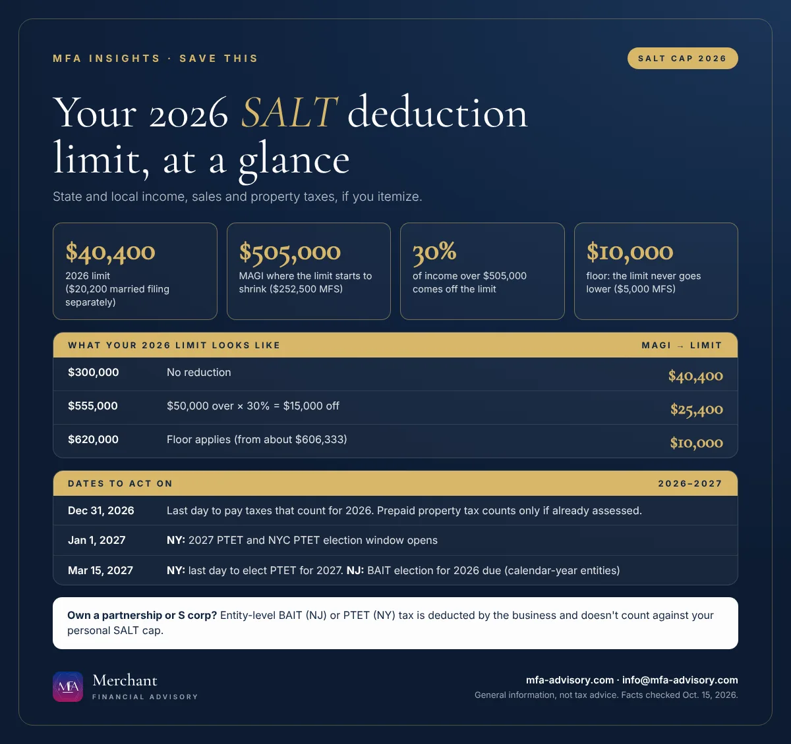

Executive summary
- $40,400 for 2026: the most you can deduct for state and local income, sales and property taxes ($20,200 if married filing separately), up from $10,000 before 2025.
- Over $505,000 of income: the limit drops by 30% of the excess and bottoms out at $10,000 (about $606,333 of income and up).
- Dec. 31, 2026: taxes count in the year you pay them, so year-end timing matters if you itemize.
- March 15, 2027: the deadline to elect New Jersey's BAIT for 2026 and New York's PTET for 2027, the entity-level taxes that sidestep the cap for business owners.
Bottom line: Add up your 2026 property and state income taxes now, check whether you'll itemize, and if you own a partnership or S corporation, ask about BAIT or PTET before March 15.
The SALT cap for 2026 is $40,400. SALT stands for state and local taxes: the property, state income (or sales) and local taxes you can deduct on your federal return if you itemize. The One, Big, Beautiful Bill Act raised the old $10,000 limit, which matters most in high-tax states like New Jersey and New York. But the new limit shrinks at higher incomes, and the timing of your payments decides which year they count in.

What is the SALT deduction limit for 2026?
For 2026 the limit is $40,400, or $20,200 if you're married filing separately. The IRS confirmed these figures in a correction to the 2026 Form 1040-ES, which had printed last year's $40,000. The higher limit applies to tax years 2025 through 2029. Under current law it returns to $10,000 starting in 2030.
One point people miss: the cap only helps if you itemize. For 2026 the standard deduction is $32,200 for married couples filing jointly and $16,100 for single filers. If your SALT, mortgage interest and charitable gifts together don't beat that, you'll take the standard deduction and the cap won't matter to you.
The SALT deduction phase-down over $505,000
If your modified adjusted gross income (MAGI, which for most people is close to the AGI on your return) is above $505,000 ($252,500 married filing separately), the limit is reduced by 30% of the amount over that line. It never goes below $10,000 ($5,000 married filing separately).
| 2026 MAGI (joint or single) | How the cap works | Your 2026 SALT limit |
|---|---|---|
| $300,000 | Under $505,000, no reduction | $40,400 |
| $555,000 | $50,000 over × 30% = $15,000 cut | $25,400 |
| $620,000 | $115,000 over × 30% = $34,500 cut, floor applies | $10,000 |
The limit hits the $10,000 floor at about $606,333 of MAGI. Between $505,000 and that point, each extra $1,000 of income costs you $300 of deduction, so deferring a bonus or timing a large capital gain can matter more than usual.
Should I itemize in 2026? Year-end moves before Dec. 31
- Add up your 2026 taxes. Property tax, state and local income tax withheld from pay, and state estimated payments. In New York City, the city's resident income tax counts too.
- Pay what's due before year-end. Taxes count in the year you pay them. If you're under the cap and itemizing, paying your fourth-quarter state estimate in December instead of January moves that deduction into 2026.
- Prepay property taxes before year-end only if they're assessed. The IRS lets you deduct prepaid property tax only if it was assessed in the year you pay it. Paying a 2027 bill that your town hasn't assessed yet doesn't count for 2026.
- Don't overshoot. Anything above your limit is simply lost. If you're already at $40,400 (or your reduced cap), prepaying more does nothing.
The workaround for business owners: New Jersey BAIT and New York PTET
Partnerships and S corporations can elect to pay state income tax at the entity level. Under IRS Notice 2020-75, the business deducts that tax, and it doesn't count against any owner's personal SALT cap. The owners then generally claim a credit on their state returns. For owners whose cap has fallen to $10,000, this is often the bigger saving.
New Jersey (BAIT). Partnerships and S corporations with at least one owner who pays New Jersey Gross Income Tax can elect the Pass-Through Business Alternative Income Tax. The New Jersey BAIT election is made electronically by the original due date of the PTE-100 return, which is March 15, 2027 for calendar-year entities electing for 2026. It can't be made retroactively, and single-member LLCs and sole proprietors can't elect.
New York (PTET). The New York PTET election works differently: you elect for the year ahead. The window for 2027 runs Jan. 1 to March 15, 2027, and late elections aren't accepted, even for newly formed businesses. The 2026 window has already closed. The New York City PTET uses the same election window, for businesses that also elect the state PTET.
Whether either election pays off depends on how many owners you have, where they live, and what credits they can use, so run the numbers before you elect.
FAQs
$40,400, or $20,200 if married filing separately. It is reduced by 30% of modified AGI over $505,000 ($252,500 married filing separately), but never below $10,000 ($5,000).
No. The SALT deduction is an itemized deduction. If your itemized total is below the 2026 standard deduction ($32,200 joint, $16,100 single), the cap doesn't affect you.
You can pay them, but they're deductible for 2026 only if the tax was assessed in 2026. Check your town's assessment dates before paying early.
Yes. New York's 2026 election closed in March 2026. You can elect for 2027 between Jan. 1 and March 15, 2027.
No. Calendar-year partnerships and S corporations can still elect for 2026 by the original due date of the 2026 PTE-100, March 15, 2027.
Related reading: Year-end tax planning 2026: 4 dates that can still lower your tax bill and NJ property tax relief: ANCHOR, Stay NJ and Senior Freeze. For help with your own numbers, see our tax planning and preparation services.
Save the key dates
- Thu, Dec 31, 2026Last day to pay state and local taxes that count for 2026 Taxes count in the year you pay them. Prepaid 2027 property taxes count for 2026 only if they were assessed in 2026.
Add to calendar
- Fri, Jan 1, 2027NY: 2027 PTET and NYC PTET election window opens Partnerships and New York S corporations can opt in to the pass-through entity tax for 2027 from Jan. 1 through March 15, 2027.
Add to calendar
- Mon, Mar 15, 2027NY: last day to elect PTET for 2027 No late elections. The same window applies to the New York City PTET.
Add to calendar
- Mon, Mar 15, 2027NJ: BAIT election for tax year 2026 due (calendar-year entities) Made electronically by the original due date of the 2026 PTE-100. Cannot be made retroactively for an earlier year.
Add to calendar
Subscribe to every MFA key date
"Add all these dates" downloads one file that opens in Apple Calendar, Outlook or Google Calendar (in Google, use Settings, then Import). Subscribing works with Apple, Google and Outlook and updates itself whenever we publish a new deadline.
Get key tax dates and new articles by email
Every new MFA Insights article, the IRS, New Jersey and New York deadlines that matter, and a calendar you can save. For individuals and small and mid-sized businesses.
Almost done: check your inbox and click the confirmation link to join MFA Insights. (If you don't see it in a minute, check Promotions or Spam.)
Have a question about this?
Ask us privately. Your question goes straight to our inbox, not onto the page, and we reply by email within one to three business days. Please don't include Social Security or account numbers.
Thanks, your question is in. We'll reply by email within one to three business days.
Sources
- IRS: Correction to state and local income tax deduction amount in the 2026 Form 1040-ES ($40,400 limit, $505,000 threshold, $10,000 floor)
- IRS Topic No. 503: Deductible taxes
- IRS: One, Big, Beautiful Bill provisions
- National Taxpayer Advocate Annual Report to Congress 2025 (30% phase-down rate)
- IRS Publication 530: Tax Information for Homeowners (prepaid real estate taxes)
- IRS Notice 2020-75: Entity-level state income tax payments by partnerships and S corporations
- NY Department of Taxation and Finance: Pass-through entity tax (PTET)
- NY Department of Taxation and Finance: PTET frequently asked questions
- NY Department of Taxation and Finance: New York City pass-through entity tax
- NJ Division of Taxation: Pass-Through Business Alternative Income Tax (PTE/BAIT)
- NJ Division of Taxation: PTE/BAIT FAQ
Facts checked against the sources above as of October 15, 2026. This article is general information, not tax, legal, or financial advice, and reading it does not create a client relationship. Tax rules change and every situation is different; confirm the details for your situation with a qualified professional before acting.